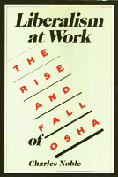

A broad perspective and rigorous analysis of the Occupational Safety and Health Administration
A broad perspective and rigorous analysis of the Occupational Safety and Health Administration


 A broad perspective and rigorous analysis of the Occupational Safety and Health Administration
A broad perspective and rigorous analysis of the Occupational Safety and Health Administration

|  |
Liberalism at WorkThe Rise and Fall of OSHACharles Noblepaper EAN: 978-0-87722-665-9 (ISBN: 0-87722-665-2) |
"The Occupational Safety and Health Administration (OSHA) was established in 1971 to protect workers from job-related accidents and diseases by setting standards and enforcing the 1970 OSH Act. It has been attacked constantly, usually by business and sometimes by government, and also by labor.... Noble makes a convincing argument, pointing out shortfalls in other theories and the responsibility of all concerned. For those unfamiliar with the political content and debates, Noble provides plenty of useful references. An important contribution to the continuing debate about a more radical, meaningful framework to effect the changes envisaged in OSHA and similar social legislation."
—Choice
Noble provides a broad perspective and rigorous analysis of the Occupational Safety and Health Administration, established in 1971 to protect workers from job-related accidents and diseases.
"Noble�s broad perspective, extensive scholarship, clear presentation, and reformist sympathies make this book a delightful change from the normal market perspective currently dominating discussions of social regulation."
—American Political Science Review
"Ambitious, carefully researched, and meticulously written..."
—Amicus Journal
"Few people are able to combine sympathy for an enterprise with a rigorous and critical analysis of it; Chuck Noble not only accomplishes this tusk but does so in a way that takes us fur beyond his case study of OSHA. He illuminates many aspects of social regulation and, most generally, policy-making in advanced capitalist societies. His perceptions for reform are an exemplary mix of hardheadedness and daring. In short this book is one of the most sophisticated and insightful examples of political economy that I know of."
—Jennifer L. Hochschild, Princeton University
Charles Noble is Associate Professor of Political Science at California State University.
Political Science and Public Policy
Science
Labor Studies and Work
Labor and Social Change, edited by Paula Rayman and Carmen Sirianni.
Labor and Social Change, edited by Paula Rayman and Carmen Sirianni, includes books on workplace issues like worker participation, quality of work life, shorter hours, technological change, and productivity, as well as union and community organizing and ethnographies of particular occupations.
© 2015 Temple University. All Rights Reserved. This page: http://www.temple.edu/tempress/titles/379_reg.html.